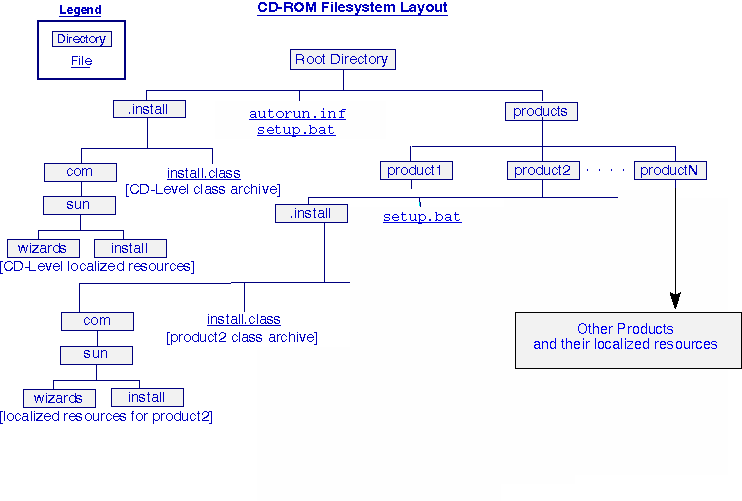

Introduction: Webstart Install Wizards on Windows
How should I package my product?
What code do I need to write?
Windows Step-By-Step Example: WindowsBuilder.java
Sample Files Involved
Step 1: Layout out the Product Tree
Step 2: Begin the Builder
Step 3: Set the Product Name and Default Directory
Step 4: Set the Images to Display
Step 5: Set any Configurable Messages
Step 6: Build the Product Components
Step 7: Create Platform Objects
Step 8: Create Platform Dependencies
Step 9: Create File Components
Step 10: Build the Product Tree
Step 11: Create Configuration Panels
Step 12: Finish the Builder
Step 13: Compile & Run the Builder & Wizard
It is easy to create a Webstart Install Wizard for installing products on Windows. Many products targeted for Windows are complex and involve installation, configuration, and testing. Through the use of a Webstart Wizard, you can be sure that your product will get installed correctly and easily, without any confusion.You can create a product tree of Files, Start Menu Icons, READMEs, etc, and have the Wizard install using this tree as a description of what to install. Your tree can be built to be architecture-independent, so that it works on all operating system implementations, regardless of the architecture of the underlying machine.
For building wizards on Windows, your product is most likely a set of files and directories. Your product's files will be placed inside the wizard, along with the graphical support, ready to be shipped elsewhere.You will be using the
FileUnitclass to represent collections of files within your product tree. This class can install sets of files into different places, depending on how you configure your product tree.You can even write support for your own custom types of files using the Wizard API (see the InstallLeaf API). See WindowsBuilder.java for the source code to this sample.
This example only covers the file collection approach (standalone files).
FileUnit class). You can define any directory structure
you want, so that the files get written to their correct
destination directories when the wizard is run. You might
also use this for miscellaneous files, such as READMEs, help
files, or other files that do not belong anywhere else. In
fact, this is the method used to write the entire Webstart
Wizard SDK (see WebstartSDKBuilder.java,
the code used to create the SDK you have just installed).
addInitializationTask() within
your builder).
"Product
Installation Directory:" question. With wizards, you
can create a series of user interface panels that gather
user customization information that you use to affect the
outcome of the install. Or, you could have a series of
panels that customizes the product after
installation, without the user having to go edit text files,
or run other utilities to finish the installation and
configuration of the product. You can then install these panels
within the panel sequence of your wizard to present to the user
before or after installation. There is an API to add these panels
in the Wizard API, see the WindowsBuilder below for an
example of a pre-install panel.
autorun.inf file to
the root directory of the CD-ROM, so that the installer automatically
launches when the CD-ROM is inserted into the CD-ROM drive.
For your product(s), you could use the following directory layout when organizing your product on a CD-ROM:

The top-level .install directory contains a
CD-level wizard that is capable of presenting a single
install for all of the products on the CD. In addition, the
autorun.inf file is located in the root
directory, which should run the install wizard. This is
provided so that Windows can easily locate and run the
install. There is also a setup.bat file in the root directory that is
runnable by double-clicking on it, in case the user has disabled the autorun
feature of Windows.
Each of the {product1,
product2, . . . .,
productN} directories contains all of the
products to be installed with the CD-level installer, along
with supporting files. Supporting files include another
setup.bat batch file that runs the
product-level install (a wizard that only installs one
product), the install wizard itself, and the supporting
localized resources.
You should use this layout for all CDs you install with Web Start Wizards.
For simple install wizards, the only thing you need to write is the builder code. This is where you will specify the files that comprise your product. You can also customize various aspects of the install, such as the "About..." message contents, the exit warning, etc. The rest of the install is written for you in the InstallArchiveWriter superclass. A basic set of panels are provided for your wizard. The panel sequence is as follows:
- 1. Welcome (With optional "About..." Dialog)
- 2. Install Type ("Typical" or "Custom")
- 3. Locale Selection (if the user selected a "Custom" install)
- 4. Directory Selection (if the user selected a "Custom" install)
- 5. Component Selection (if the user selected a "Custom" install)
- 6. Verify Panel (Shows user what they selected)
- 7. Progress Panel (product actually gets installed here)
- 8. Summary Panel (shows results)
For more complex installs, you would need to build your product tree yourself, as well customizing the wizard panel tree. This is what we will be doing in the WindowsBuilder below. The basic steps to creating a wizard are:
- 1. Creating a development environment,
- 2. Writing a builder,
- 3. Creating pre- and post-installation configuration panels, and then
- 4. Compiling and running your builder to produce the wizard.
It is recommended that you put any of your
supporting java .class files in a separate
package from the Webstart Wizards SDK classes. You
should, however, include the Webstart Wizards SDK classes
in your CLASSPATH setting. An example
directory structure that might be used is:
classes
--> com
---> sun
---> wizards
---> awt
---> core
---> panels
---> nodes
---> builder
---> rmi
---> install
---> products
---> panels
---> tasks
---> nodes
---> companyName
------> install
---> builders
---> panels
---> tasks
---> {other types}
You would then include the 'classes' directory in your CLASSPATH and
import your customized classes with import com.companyName.install.panels.*;
within your java code.
As an example, suppose you write a builder and place it in the com.companyName.install.builders
package and name it MyBuilder.java. To compile it, you would put the 'classes'
directory in your CLASSPATH and type:
javac com.companyName.install.builders.MyBuilder.java
Then, assuming it wrote your wizard to the current directory and
called it install.class, you would type java
install to run your wizard.
.class file for distribution. All builders (whether custom or not)
use the same basic skeleton builder to begin with:
public class SkeletonBuilder extends InstallArchiveWriter
{
public SkeletonBuilder()
{
super();
}
protected void createClientTree()
{
super.createClientTree();
/*
* Customize your builder here
*/
}
public static void main(String[] args)
{
SkeletonBuilder myBuilder = new SkeletonBuilder();
myBuilder.writeArchive();
}
}
You can then add extra code in the createClientTree() method to customize your
wizard.
In your builder's createClientTree() method, you can include calls to customize some or all of your wizard, using InstallArchiveWriter's API provided. See the InstallArchiveWriter API for details of the methods available. Some of the things you can customize are:
addNode() method of
InstallArchiveWriter. A sample pre-installation
configuration panel is used in the WindowsBuilder
below to configure the port number for the web server.
You should place your panel classes within your section of the development environment, separate from any Wizards SDK classes, and include the panels into your builder.
For example, suppose I have created a
pre-configuration panel called "PreconfigurePanel.java" that prompts
for the bin directory of the system. I have
placed the panel in the com.sun.myCompany.panels package. In my builder, I might
include this panel as a pre-configuration panel by doing the following:
import com.sun.myCompany.panels.*;
[...]
PreconfigurePanel myPanel = new PreconfigurePanel("\\bin");
addNode(myPanel, PREINSTALL);
This panel will then be shown to the user before installation. It is the panel's
responsiblility to correctly configure the system based on user input.
In the example below, the web server is, by default, set to serve web pages from the public_html
directory. We
create a post-install panel that takes user input specifying the directory to use.
Then create a task and call your task from the panel.
The task will reconfigure the web server.
In this way, you can configure the product after it has installed.
The following example builds a fictional product that consists of a set of files, and a start menu entry. The java source code will only be installed if the user is running Windows NT.
[SDK Base Directory]\samples\windows\testfiles directory of the Webstart Wizards SDK.
These files are the ones you would have to provide if you were to build and distribute this product.
The product tree is the internal wizard representation of your product. It has nothing to do with the way the product files are organized on disk. The product tree is built at buildtime and then used to install at installtime (also known as runtime).
We first decide how we want to ship our product. We know we have to install our product, but only install the java demos if the user is using Windows NT. Otherwise, the component will not appear on the component selection screen.
Therefore, our product tree conceptually looks like this:
[PRODUCT]
|
+----------------------------+-------------------------------+
| | |
[Binary Files]* [Documentation]* [WinNT Dependency]
| | |
| | |
[BinFiles] [DocFiles] [JavaFiles]*
NOTE:
* Optional Component
WindowsBuilder.java in the Web Start Wizards SDK
"classes" directory:
import com.sun.install.panels.*;
import com.sun.install.products.*;
import com.sun.wizards.builder.resolver.*;
import com.sun.wizards.core.*;
import java.util.*;
import java.io.*;
public class WindowsBuilder extends InstallArchiveWriter
{
public WindowsBuilder()
{
super();
}
protected void createClientTree()
{
super.createClientTree();
/*
* Customization code goes here
*/
}
public static void main(String[] args)
{
WindowsBuilder sampleBuilder = new WindowsBuilder();
sampleBuilder.writeArchive();
System.exit(0);
}
}
This class extends InstallArchiveWriter so that we can use some of its
convenience methods created for making install wizards. We also override
createClientTree() because this is where we are going to make our wizard
do something instead of not doing anything.
You can compile and run this class if you wish. To compile it, type:
c:\sdk\classes> javac WindowsBuilder.java
Do not type the c:\sdk\classes>. That is an indication of a command prompt.
To run the resulting class, type:
c:\sdk\classes> java WindowsBuilder
It will complain:
Nothing to do: No components added, quitting...
This is because we have not added any components, and could not create an installation wizard.
These tasks come next.
createClientTree() method:
setProductName("My Windows Sample Web Server");
setDefaultDirectory("[userDir]\\http");
* NOTE: The double backslash (\\) is required to escape the normal meaning of the backslash character.
The [userDir] key in the second line gets replaced at runtime with the "home" directory for the user
that is running the wizard. There are other substitutions one could do:
[productDir] = Standard install directory (usually [WINDIR]\Program Files on Windows)
[sharedLibDir] = Shared Library directory (usually [WINDIR]\system on Windows)
[tmpDir] = Temporary scratch directory (usually [WINDIR]\temp on Windows)
[currentDir] = Current directory
createClientTree() method:
setImage("com.sun.install.install");
The com.sun.install.install specification means that the image exists in the com/sun/install
directory relative to your CLASSPATH (or current directory if no class path is set), and is called
install.gif, install.jpg, install.jpeg, or install.jfif. You must also make sure that your image gets put into the archive
by configuring a FileResolver to get the image, and adding the image to a ResourceCollection so that it gets resolved and put into the archive.
To do this, add this code to the createClientTree() method:
FileResolver resolver = new FileResolver(System.getProperty("java.class.path"));
ResourceCollection collection = new ResourceCollection();
collection.addResource("Images", "com.sun.install.install", resolver);
addCollection(collection);
createClientTree() method:
setAboutMsg(new Msg("com.sun.install.Install", "AboutText"));
setCancelMsg(new Msg("com.sun.install.Install", "CancelAreYouSure"));
setExitMsg(new Msg("com.sun.install.Install", "ExitAreYouSure"));
This sets some configurable messages. If you do not specify an
"About..." message, then the about button will not be displayed
on the Welcome Panel. The others will default to default
values. The About message is displayed when the user clicks the
"About" button on the Welcome Panel. The Cancel message is
displayed when the user cancels some operation such as install
or disk space checking, by clicking the "Cancel" button. The
Exit Message displays when the user clicks the "Exit" button.
Note that these messages are localized. At runtime, the specified locale resource bundle is searched according to the runtime locale. In this case the resource bundle "com.sun.install.Install" will be searched for a message corresponding to the supplied keys.
createClientTree() method:
SoftwareComponent binaries = new SoftwareComponent(new Msg("Binary Files"));
SoftwareComponent documentation = new SoftwareComponent(new Msg("Documentation"));
SoftwareComponent NTjavademos = new SoftwareComponent(new Msg("NT Java Demos"));
A SoftwareComponent represents a node in the product tree that can show
up on the ComponentPanel as selectable by the user.
Each one is given a name that will appear to the user on the Component Selection screen.
createClientTree() method:
Platform ntPlatform = new Platform(Platform.WINDOWS, Platform.WINNT, Platform.ALL);This object represents a specific platform (Microsoft WindowsNT, running on any architecture). This object can be used to build Platform Dependencies. See the API Documentation for instructions on how to specify your own platform.
createClientTree() method:
PlatformDependency ntDependency = new PlatformDependency(ntPlatform, false);
These Platform Dependencies are objects inserted into the product tree.
They compare the the supplied Platform object to the current platform and
"fail" if they do not match. You can also invert The dependency,
meaning it will "pass" when the dependency "fails", by passing true
as the second argument to the constructor.
These will be checked just before the installation takes place, and if the platforms do not match up, they will not install anything that is attached in the tree below that object.
You can create your own custom Dependency by creating a class that
extends com.sun.install.products.InstallNode and
implement the refresh() method. The refresh()
method should set the nodeIsActive property to true if
the dependency is true. Then you can insert your new Dependency into the
tree just as we have done here.
The SunJDKDependency is
an example of how this might be done. You create one by passing the
version of the Sun JDK you are looking for. It has the following refresh()
method:
public boolean refresh(Vector targets, String sharedPoolKey)
{
RunCmd versionCheck = new RunCmd("java -version", true);
String result = versionCheck.getAllOutput();
if ((result != null) && (isCompatible(result))
{
nodeIsActive = !invert;
}
else
{
nodeIsActive = false;
}
}
The isCompatible() method simply checks to see if the two version strings are compatible,
and is irrelevent to this topic.
Note that if the invert flag (a flag within the class) is true we
must invert the output; that is, set nodeIsActive to the opposite of what we would
normally set it to.
createClientTree() method:
FileUnit binFiles = new FileUnit("Bin Files");
binFiles.addFile("..\\samples\\windows\\testfiles", "binfiles", null);
addCollection(binFiles.getCollection());
FileUnit docFiles = new FileUnit("Doc Files");
docFiles.addFile("..\\samples\\windows\\testfiles", "docfiles", null);
addCollection(docFiles.getCollection());
FileUnit javaFiles = new FileUnit("Java Files");
javaFiles.addFile("..\\samples\\windows\\testfiles", "javafiles", null);
addCollection(javaFiles.getCollection());
NOTE: The relative paths above assume that you are running this code from the classes directory of the Web Start Wizards SDK.
For each File collection, you must declare which files it will install (by using
the addFile() API of FileUnit), and then add those files to the archive
via the addCollection() API of InstallArchiveWriter.
Now all of the components of the Product Tree have been built. In the next step, they will all be pieced together to form the entire product tree.
createClientTree() method:
binaries.addComponent(binFiles); addComponent(binaries); documentation.addComponent(docFiles); addComponent(documentation); ntDependency.addComponent(javaFiles); NTjavademos.addComponent(ntDependency); addComponent(NTjavademos);These lines build the tree from the bottom-up. First we create the "Binaries" subtree, then add that subtree to the product. Next, we create the "Documentation" subtree, and add that to the product. Finally, we create the multi-level "NT Java Demos" subtree, and add the subtree to the product.
createClientTree() method:
Object[] nameArgs = new Object[] {getProductName()};
DirectorySelectionPanel postConfigurePanel = new DirectorySelectionPanel(getWizardState(),
"Post Configuration Panel", "myDefaultDir",
"myDefaultDir", "\\http");
postConfigurePanel.addDescriptionText(new Msg("com.sun.install.Install",
"PostConfigDirectoryDescription",
nameArgs));
postConfigurePanel.addLabelText(new Msg("com.sun.install.Install",
"PostConfigTextLabel"));
addNode(POSTINSTALL, postConfigurePanel);
This creates a single Directory Selection panel and places it as a
post-install panel. Post-install panels are shown after
installation. You can also place pre-install panels which
are shown directly before installation. The arguments to the DirectorySelectionPanel
constructor are:
wizardState - The buildtime wizard state, available from the superclass.
"Post Configuration Panel" - Default header name for this panel
"myDefaultDir" - The wizard state key under which is stored the default
directory displayed in the panel.
"myDefaultDir" (again) - The wizard state key under which this panel
should store the entry made by the user. This is stored via the isDisplayComplete()
method of the panel.
"\\http" The default directory used during a panel reset,
normally this value is the same one stored under the default directory key.
Note that the messages added using addDescriptionText(..) and addLabelText(...)
are localized. At runtime, the specified
locale resource bundle is searched according to the runtime locale. In
this case the resource bundle com.sun.install.Install will be
searched for a message corresponding to the supplied keys.
The DescriptionText is the text displayed to the user that describes the data the panel is looking for.
The LabelText is the text displayed just above the text entry box describing the contents of the entry box.
The addNode() argument is the type of panel this is
(either POST_WELCOME, PRE_VERIFY,
PREINSTALL or POSTINSTALL) and the root of the panel tree
itself, or a single panel if desired.
You could create an entire subtree of panels and insert them as post-install panels. If you did this, the entire tree would be visited after installation. In those panels, you could do post-install configuration of the newly-installed product according to user input. Or, you could do an electronic registration screen.
public static void main(String[] args)
{
MyFirstBuilder sampleBuilder = new MyFirstBuilder();
sampleBuilder.writeArchive();
System.exit(0);
}
This is the main method of your builder. This simply instantiates a builder
and writes it out to the current directory.
After this step, you should have a complete, runnable builder.
CLASSPATH
and doing the following (on Windows, where your command prompt is c:\sdk\classes>):
c:\>set CLASSPATH= c:\>cd [SDK Base Directory]\classes c:\sdk\classes>javac WindowsBuilder.javaIf there were no errors, you can now run your builder to create your wizard archive:
c:\sdk\classes>java WindowsBuilderIf there are no errors, your builder should have produced a
wizard.class file in the current directory.
This is your wizard! You can then run your wizard by typing:
c:\sdk\classes>java wizardYou should see your wizard come up with the Welcome Panel. If it does not, look for error messages that might explain why.